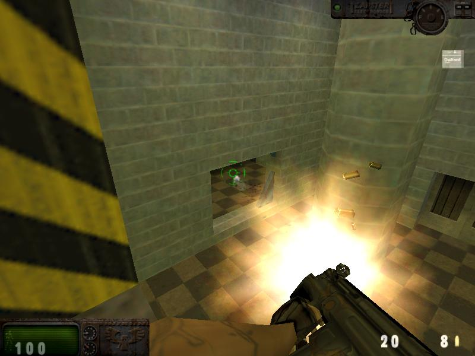
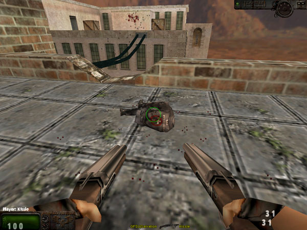
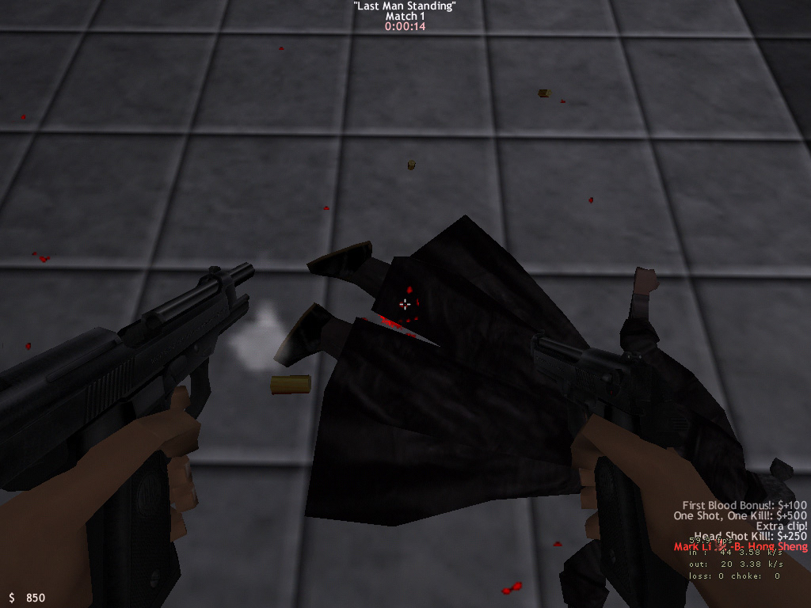
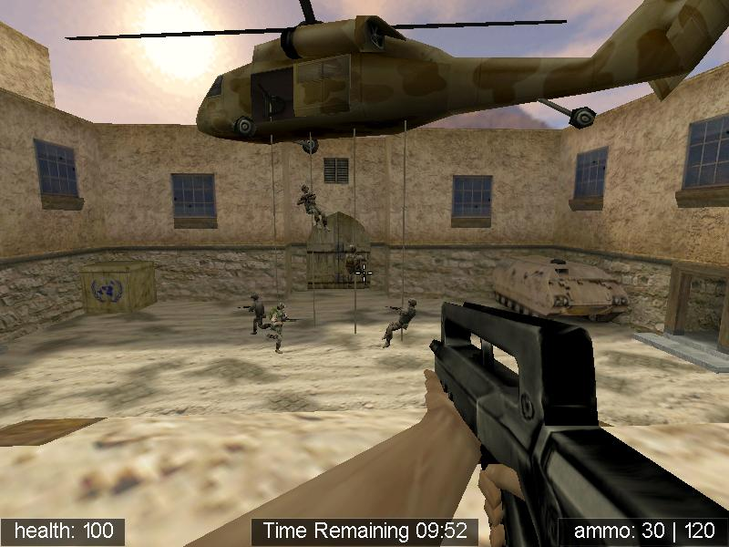
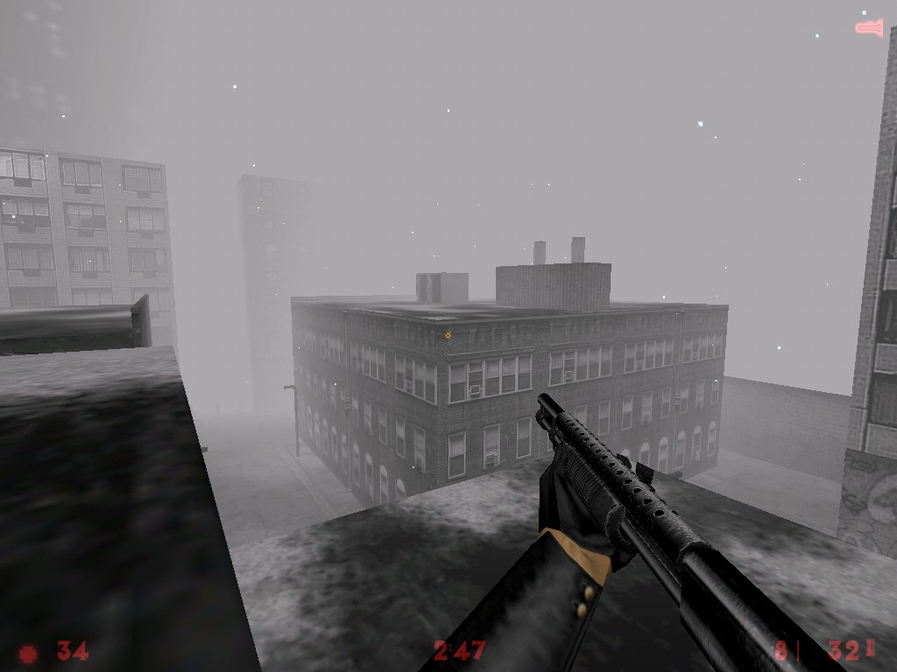
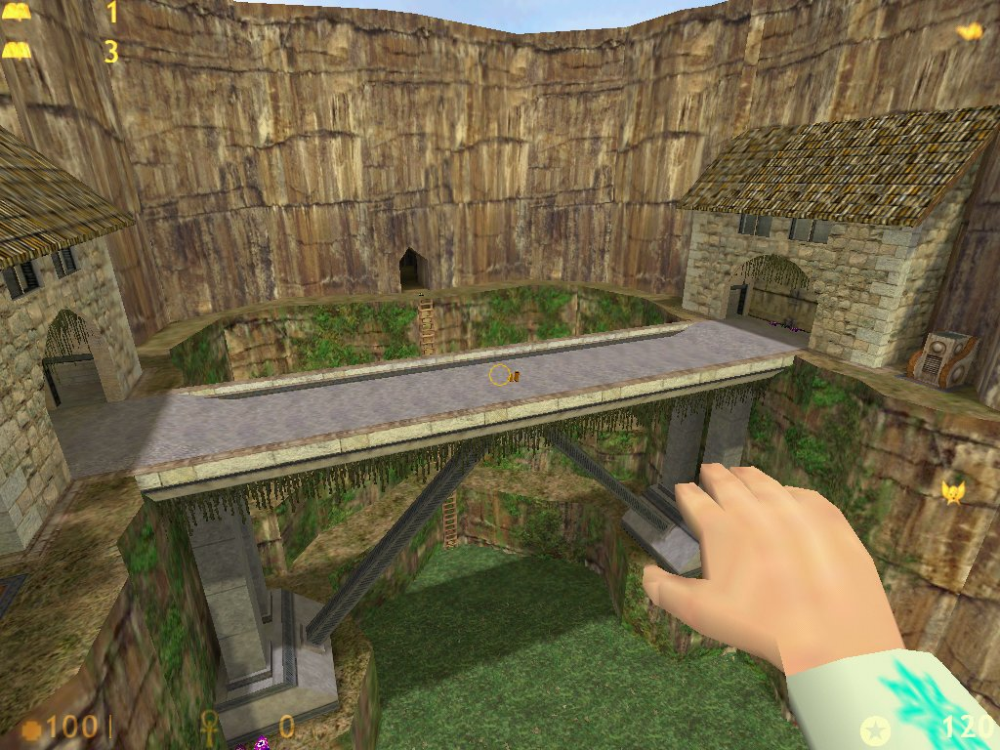

Обзор основных Half-Life - модов
Андрей "Newfr" Иванов
The Wasteland
http://www.planethalflife.com/thewastes
Да, вы правильно подумали о Fallout'e. Этот мод делался под впечатлением от игры. Игра переносит нас на просторы великой Пустоши, где каждый борется за еду и воду как может, но цель у всех одна - увидеть хотя бы еще один закат.

Вот это мы имеем на данный момент
И вот вы встаете в ряды одной из группировок, бродящих по Пустоши в поисках лучшей доли. Орда, каждый член которой не испытывает страха, раскаянья и не имеет надежды, назвавшая себя Ronin Nomads ищущая что-нибудь ценное на выжженной земле. Все, что не удается унести, уничтожается. Таков их суровый закон выживания. Полувоенная организация USMC Raiders под предводительством полковника Franco Gustavo живет по принципу "USMC это все, все остальное - хаос". Фанатичные Regulators, злейшие враги Рейдеров, несут закон и порядок всеми доступными способами. Их задача уничтожение всех остальных фракций для воцарения закона на всей Пустоши. Vagrants пришли с Востока, наиболее пострадавшего от Великого Огня. Они были беззащитными и беспомощными, их грабили и убивали. Но появился лидер, который смог создать из них армию, которая может постоять за себя. И вот они снова продолжают свой путь на Запад с целью найти место, где бы смогли счастливо жить. Tribals стали заниматься скотоводством и земледелием, чтобы выжить. Их искусство не дает многим спать спокойно. И вот пришло время, когда они вынуждены были взять в руки оружие, чтобы защитить себя от посягательств соседей.

А вот это нам обещают в скором времени
На данный момент игра представляет собой простой или командный deathmatch с постапокаллипсической экзотикой в виде смешения копий, молотов и автоматов в арсенале, да карт, изображающих заброшенные Vault'ы, города уцелевших и тому подобное. Модели страдают кривизной, а геймплей нудностью. Но, судя по тому, что вышла еще только вторая бета версия, команда разработчиков насчитывает аж двадцать шесть человек, не все еще потерянно. Особенно в этом убеждаешься, глядя на скриншоты из будущей версии этого мода, в котором обещают и такую вещь, как "objective based gameplay", то есть то, что мы сейчас видим в RtCW.
The Opera
http://opera.redeemedsoft.com/index.htm
Вы любите фильмы Джона Ву (John Woo), экшен без остановки и Макса Пейна без bullet-time? Если да, то этот мод определенно для вас. Его авторы пытались воссоздать атмосферу фильма "Кровавая опера Гонконга" (Hong Kong Blood Opera). И им это удалось! Итак, вы становитесь злобным киллером с восьмью слотами под оружие. А поместить в эти слоты можно много чего: ножи (боевой и метательный), мелкокалиберные пистолеты (Berreta 92FS, Walter PPK-SD, Токарев 213А, Desert Eagle .357 и многое другое), крупнокалиберные пистолеты (Colt Python, Desert Eagle .50 AE, SIG P220 и многое другое), пистолеты-пулеметы (MAC-10, Micro Uzi, Scorpion), большие пушки (Spas-12 S3S, Winchester model 94).

The best way to learn about duelling is to duel and survive
Каждое оружие занимает определенное число слотов (чем больше "ствол" - тем больше слотов). Все мелкокалиберные пистолеты и пистолеты-пулеметы, некоторые крупнокалиберные пистолеты можно брать в обе руки (акимбо), что имеет свои положительные и отрицательные стороны. Положительные - это повышенная огневая мощь, а отрицательные - быстрый расход боеприпасов и долгая перезарядка. А патроны придется добывать с тел убитых врагов или же за особо стильное убийство вам добавят немного патронов автоматически. Кроме того, в начале игры вы выбираете одно умение для своего персонажа: меткость (нет пенальти на стрельбу в движении), сила (гхм…сила Джедаев помогает наносить больше повреждений при стрельбе), движение (выполнение всех трюков без ограничений), реакция (быстрая перезарядка), подвижность (прыжки длиннее, бег быстрее) и так далее. Счет же в игре идет не на фраги, а на деньги. Деньги даются за убийства и просто за нанесение повреждений. Но чем красивее и стильней убийство, тем больше денег за него дают. К примеры, за то, что вы изрешетите противника из Скорпиона, то получите несколько сотен у.е., а если ухитритесь попасть противнику в голову из Токарева в прыжке, то игра расщедриться на несколько тысяч. Ну и какой же боевик без разного рода уклонений, перекатов и прыжков со стрельбой? Здесь есть все приемы Макса Пейна плюс сальто в воздухе и перекаты в положении "лежа". Правда на все это расходуется некая энергия, которая со временем восстанавливается. И, не дай Бог, вам израсходовать ее всю в бою - вы не сможете выполнить ни один трюк.
Но самый смак этого мода в том, что нет ни индикатора здоровья, ни индикатора патронов в магазине. Все определяется на глаз, либо при наличии специального умения вам покажут все эти индикаторы. Вот такая вот Гонконгская веселуха.
Global Warfare
http://www.planethalflife.com/globalwarfare
По сути, этот мод застрял где-то посередине между Team Fortress Classic и Firearms. Почему? Сейчас поймете. Как всегда в тимплейных модах, здесь борются две команды. В основе всей игры лежит некий нефтяной кризис, в ходе которого страны арабского мира, большинство которых, как и мы (чего уж тут скрывать) живут за счет нефтедолларов оказались на грани полного развала экономики. Во многих странах вспыхнули восстания, которые в свою очередь привели к свержению правительств этих стран. Силы ООН пытаются навести порядок в охваченных гражданскими войнами странах и вернуть свергнутые правительства к власти. Так же за них сражаются войска сочувствующие свергнутым правительствам. Войска Арабских Освободительных Сил преследуют примерно ту же цель, но хотят добиться ее без каких-либо указаний Запада и Европы. Бывших лидеров своих стран они считают повинными в сложившейся ситуации, и ни под каким предлогом не хотят мириться с мыслью о возможном их возвращении.

Высадка войск ООН
Каждая из воюющих сторон насчитывает в своей армии по шесть классов: пехота, медики, связисты, инженеры, снайперы и генералы. Каждый класс обладает своими способностями, так пехотинцы могут использовать пулеметы, медики могут лечить и воевать только со SPAS-12, связисты способны вызывать удары с воздуха и вертолет с аптечками и гранатометами (их можно добыть только таким способом!). У каждой стороны есть своя база на карте, где возрождаются убитые солдаты. Но в отличие от большинства игр своим ходом с нее уйти нельзя. Между базой и основным полем боя курсирует транспорт (АРС или Black Hawk), который и доставляет бойцов до места назначения. Уничтожение этого транспорта одной из команд, а за тем и оставшихся на карте игроков противника означает выигрыш. Кроме того, на каждой карте есть определенное задание для каждой стороны. Выполнение этого задания так же означает победу. Игра идет не на отдельной карте, а в целой компании. Каждая сторона первоначально занимает 4 территории-карты, компания начинается с боя за 9 нейтральную территорию-карту. На последней карте у проигрывающей стороны появляется генерал. Им, как и VIP'ом в Counter-Strike становиться первый подключившийся к серверу игрок. Да и судьба у него такая же, как и у VIP'а в CS: вся команда противника бегает с выпученными глазами за его головой. С его убийством и экспроприацией головного убора нападающая на этой карте сторона выигрывает всю кампанию.
Что касательно местного арсенала, то основной упор сделан на автоматическое оружие. Кроме стандартного набора из АК 47, М16 А2, FAMAS, MP5 здесь встречается такая экзотика, как Enfield SA80 и H&K G36. Набор стандартных шутеровских пистолетов: Beretta 92F, SIG Pro, Colt 1911 и P99. Так же несколько нетипичен набор юного снайпера: PSG1, M40A1, СВД, Walther 2K, M96. В тяжелом вооружении опять никакого оживления: пулеметы М60 и PKM, 40mm Grenade Launcher, LAW Rocket Launcher, Stinger. Последние предназначены для уничтожения транспорта противника и лежат на базе. Любой игрок может их подобрать. Кроме этого присутствуют ручные гранаты, бинокль, GVS5 Laser Targeter связиста и С4 с противопехотными минами для инженера, последний вид оружия являются не только великолепным противопехотным средством, но и головной болью международных гуманитарных организаций.
Vampire Slayer
http://www.planethalflife.com/vampire
Нет, это не про грудастую девицу Баффи, которая в свободное от учебы время мочит бедных вампиров в школьном сортире. Все гораздо серьезнее. Здесь идет борьба за выживание.
Впервые в своей практике я встречаю командный deathmatch с абсолютно непохожими командами. То есть абсолютно. Здесь вампиры действительно обладают нечеловеческой силой, а посему они бегают быстро и прыгают ловко. К тому же они проделывают все это абсолютно бесшумно.

Святой отец, а зачем вам дробовик?
Да и атак у них всего две: наброситься на жертву или подкравшись полоснуть ее когтями. Зато со 100% летальным исходом, если вы, конечно, не ухитритесь попасть в ногу или в руку. Охотники не могут похвастаться такой скрытностью и силой. Все, что им остается делать - громко дышать и топать, подманивая вампиров-новичков на расстояние прямого выстрела из дробовика. Да, в отличие от вампиров "старой закалки", не признающих огнестрельное оружие, охотники во всю используют достижения военных. Проблема лишь в том, что убить вампира таким способом нельзя, даже ранить нельзя. Можно только оглушить на короткое время. Изрешеченный пулями мертвяк по прошествию этого времени снова встанет в строй. Тут надо действовать, как в старые добрые времена - осиновым колом (убивает оглушенных вампиров и наносит повреждения в ближнем бою). Ну, или арбалетом с осиновыми колами (летально только попадание в сердце или голову). В свою очередь вампиры могут лечиться, выпивая кровь у своих жертв.
Каждый вампир, а в игре их три персонажа, имеет свой специальный навык: один может видеть в темноте, другой - становиться невидимым на время, третий - способен некоторое время побыть на солнце без последствий для здоровья. В свою очередь каждый охотник, а их всего два персонажа, начинает игру со своим набором оружия. Так же охотники могут поднимать оружие павших товарищей. Игра, как и в Counter-Strike, делиться на раунды, которые заканчиваются только после уничтожения одной из команд. Все убитые игроки должны ждать завершения раунда, чтобы поиграть снова. Вот такой выходит vampire ass kicking in the name of Lord…
Arcana Mysteria Magica
http://www.planethalflife.com/arcana/news.html
Виртуальным Гарри Поттерам посвящается. Игра представляет собой deathmatch с магами и магией. А маги нынче бывают: белые, черные, зеленые, красные и, простите, голубые. Правда, все они какие-то больно недоученные и знают в начале игры только простейшие заклятия. Что бы обучиться чему-нибудь более серьезному, нужно оббегать уровень в поисках магических томов, которые смогут добавить еще одно, более продвинутое заклинание. Кроме этого, у каждого вида магов есть свое особое заклятье, которое действует либо только на магов одного цвета, либо на всех, но на магов определенного цвета особенно хорошо.

Как прекрасна наша саванна с высоты птичьего полета
Так белые маги могут наколдовывать экзорцизм, что делает черных магов неспособными колдовать пять секунд. Или же голубые маги вызывают Струю воды, которая наносит очень сильные повреждения красным магам. На творение различных заклятий, как и положено, расходуется манна, которая регенерируется со временем. Местным аналогом брони является способность сопротивляться магии, то есть чем выше ваша сопротивляемость, тем меньший урон вам наносят заклинания противников. Повысить эту способность можно, пожевав неаппетитные листья некоего фиолетово-красного растения. Правда стоит учесть тот факт, что чем выше ваша сопротивляемость, тем ниже скорость регенерации манны. Так что никакого "танкодрома" не получиться. В довершении этой пестрой картины стоит упомянуть о магических кольцах и своеобразной мини-игре в защиту тотема. Кольца - это весьма редкие артефакты, периодически появляющиеся в случайных местах карты. Они содержат самые мощные заклятия, использование которых не забирает у игрока манну. Вот только кольца имеют ограниченное число зарядов и перед использованием требуют идентификации (нужно найти и прочитать магический том).
Кроме колец на уровне иногда возникают маленькие мешочки с символом инь-янь. Если кто-то подбирает этот мешочек, то он становиться защитником тотема. И вот когда защитников наберется ровно половина игроков, то появиться сам тотем (такой большой красный кристалл с пятью тысячами хит поинтов здоровья). Все защитники (они начинают светиться) должны не дать уничтожить тотем остальным игрокам в течение пяти минут. Команда, которая побеждает, получает по 7 фрагов на брата, проигравшие же получают по 7 смертей на каждого.